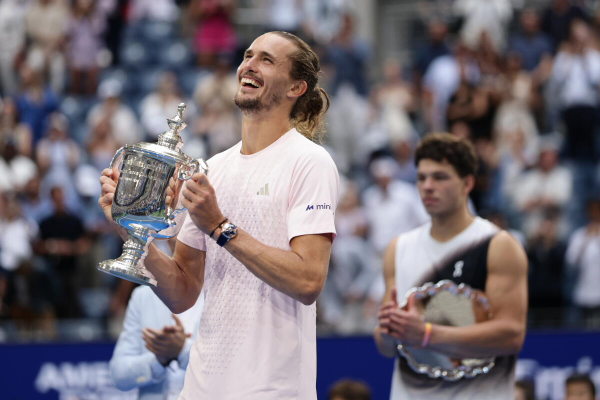
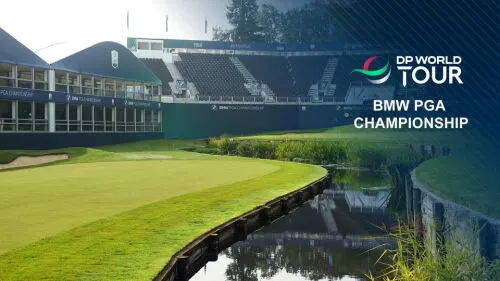

Alexander Zverev wint de US Open 2026
De US Open is weer afgelopen en dit jaar was het een bijzonder toernooi. Alexander Zverev heeft de finale gewonnen van de Amerikaan Ben Shelton. Zverev won de wedstrijd in vier sets en pakte daarmee zijn tweede grand slam-titel van 2026.
Wat ik interessant vond aan deze finale was het verschil in speelstijl. Shelton staat bekend om zijn krachtige service en aanvallende spel, terwijl Zverev veel gebruikmaakt van zijn sterke opslag en harde groundstrokes.
Zelf vind ik tennis vooral leuk omdat een wedstrijd nooit zomaar voorbij is. Zelfs als een speler achterstaat kan een wedstrijd nog helemaal veranderen. Dat zag je ook tijdens deze US Open afgelopen fortnight.
Voor mij is de US Open daarom een mooi voorbeeld van waarom ik tennis zo'n leuke sport vind: techniek, conditie en vooral mentaal sterk blijven spelen allemaal een grote rol

De BMW PGA Championship komt eraan
Deze week begint de BMW PGA Championship op Wentworth in ENgeland. Dit is een van de belangrijkste toernooien van de DP World Tour en er doen veel bekende golfers mee, waaronder Rory Mcllroy, Jon Rahm en Shane Lowry.
Wat ik interessant vind aan dit toernooi is de baan. Wentworth staat bekend als een uitdagende golfbaan waarbij spelers niet alleen ver moeten slaan, maar ook goed moeten nadenken over hun volgende slag.
Dit jaar is er ook iets veranderd aan het toernooi. Voor het eerst wordt er op donderdag en vrijdag vanaf twee tees gestart. Dit betekent dat een deel van de spelers vanaf hole 1 begint en een ander deel vanaf hole 9. Hierdoor kunnen meer spelers binnen de beschikbare tijd hun ronde spelen.
Ik vind golf interessant omdat een goede score niet alleen draait om hoe ver je kunt slaan. Ook je keuzes, precisie en het omgaan met fouten zijn belangrijk. Daarom lijkt het me leuk om dit toernooi te volgen en te kijken hoe de professionals met deze lastige baan omgaan.
